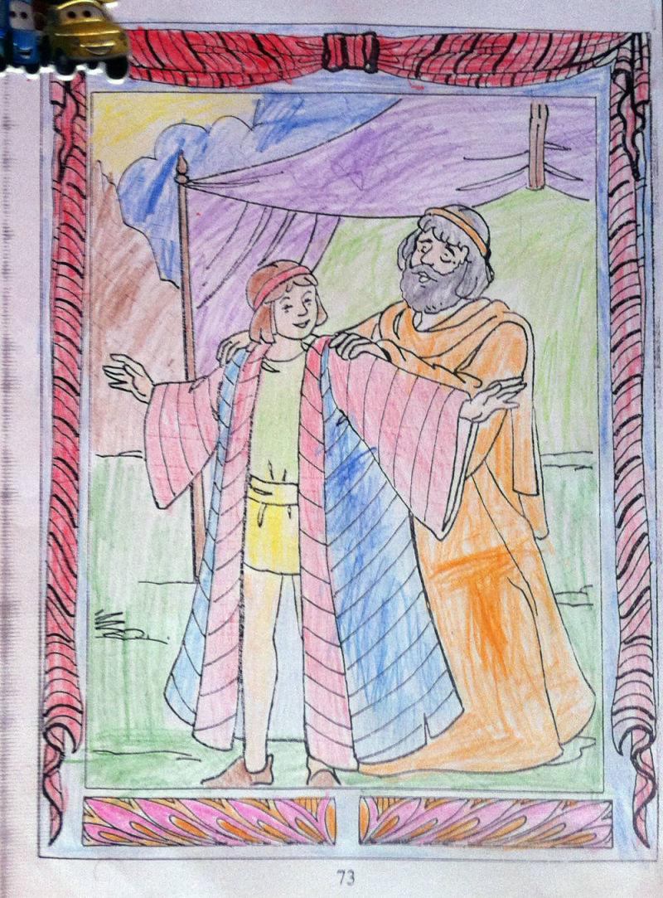
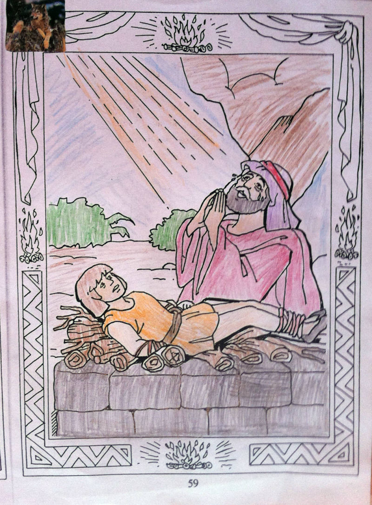
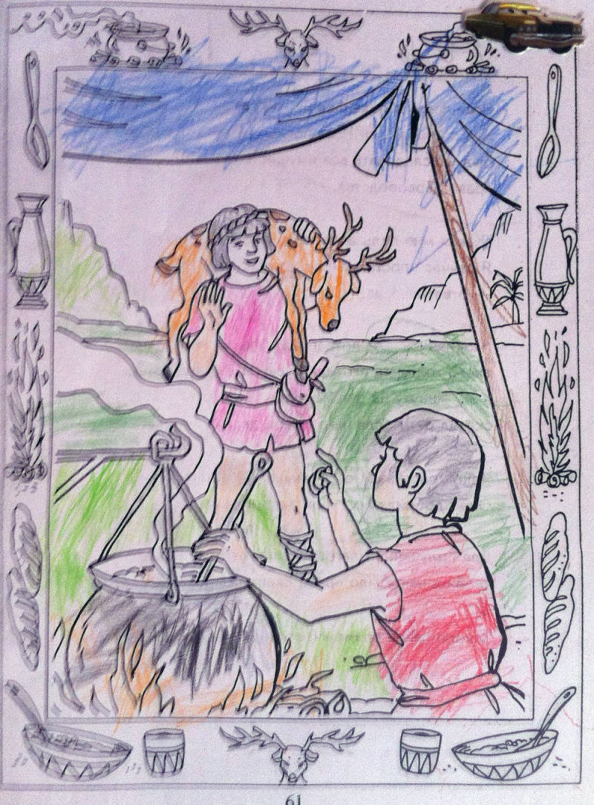
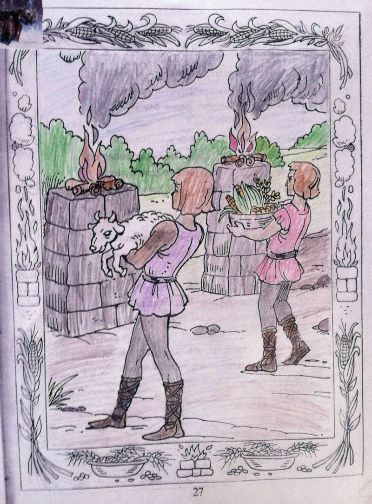
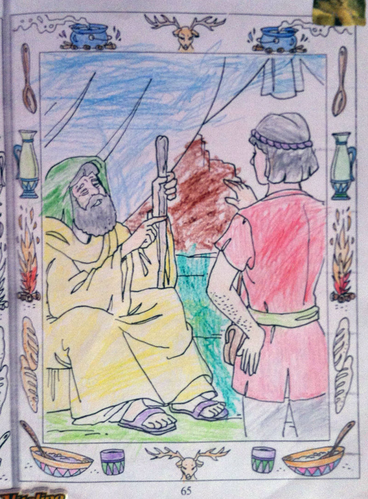
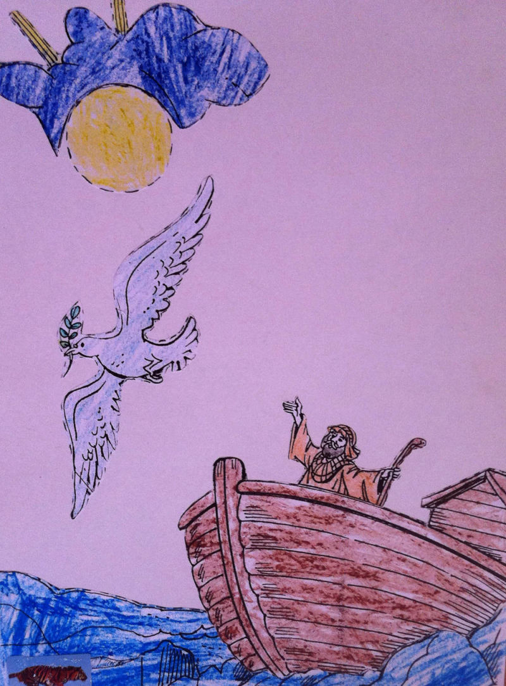
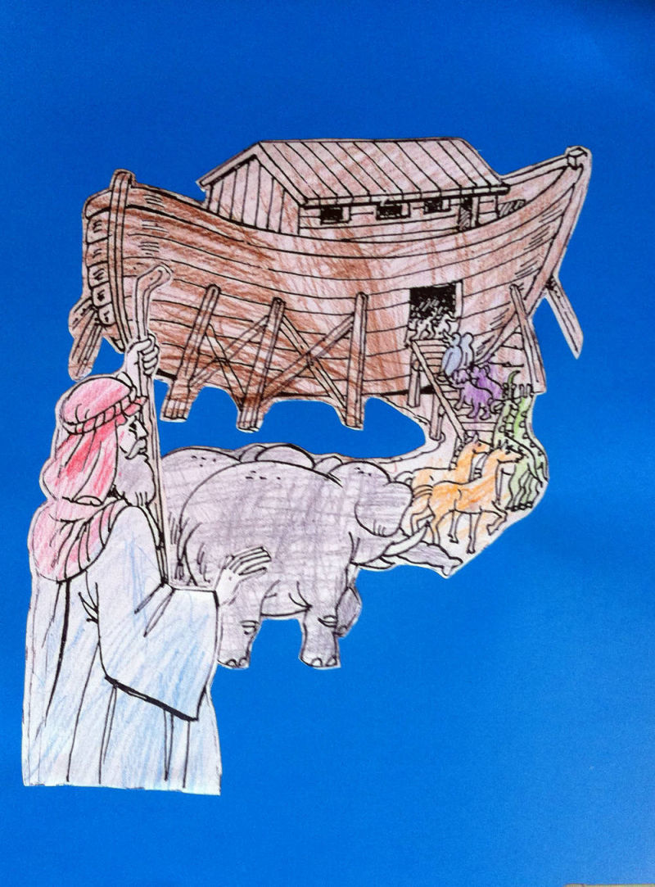

Иаков одевает любимому сыну Иосифу красивую , разноцветную одежду.

Авраам своим поступком доказал свою веру Богу , что он, любит Бога ,сильнее своего сына Исаака.
Братья решили убить Иосифа и бросить в высохший колодец.
 Иуда брат , увидел караван торговцев идущих в Египет и предложил продать Иосифа в рабство, и продали его за 20 сребреников.
Иуда брат , увидел караван торговцев идущих в Египет и предложил продать Иосифа в рабство, и продали его за 20 сребреников.

Сыновья Исаака. Исав вернулся с поля и говорит Иакову «…я очень хочу есть. Дай мне твоего супа».» Продай мне право твоего первородства, -ответил Иаков. –Тогда получишь еду».
Иосиф рассказывает свои сны о снопах и звездах братьям и отцу.
Каина в сердце поселилась зависть к Авелю и решил убить его, когда они были в поле схватил камень и убил им своего брата, и оставил тело брата в поле

Когда выросли дети Адама, они принесли Богу жертву. Каин как земледелец положил на алтарь плоды земли. А Авель, как пастух овечку. Господь принял жертву Авеля.

Исаак был стар и слепой. Он подозвал к себе Исава и сказал ему: »Пойди на охоту, принеси дичи и приготовь мне из нее кушанье. Я поем и благословлю тебя, потому что чувствую близкую смерть».

Вода стала быстро убывать. И ковчег опустился на что-то твердое. Ной выпустил голубя.

Бог велел Ною построить ковчег и когда ковчег был готов, около него стались собираться звери. Когда все зашли в ковчег, Бог закрыл дверь.
Иаков подошел к слепому отцу и сказал «….это я, твой первенец, Исав, поешь дичи моей и благослови меня»